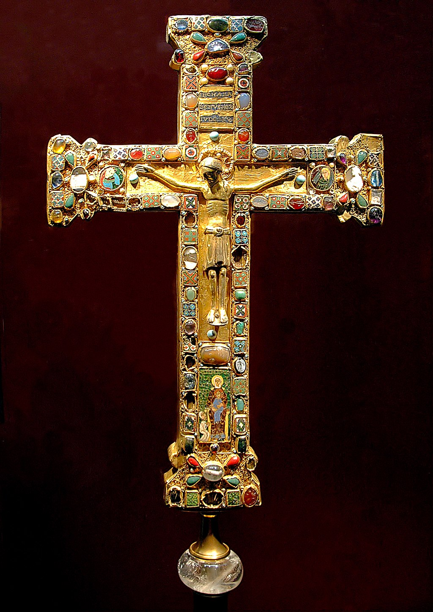

Starożytność
Średniowiecze – epoka w historii Europy trwająca od V do XV wieku, która rozpoczęła się wraz z upadkiem cesarstwa zachodniorzymskiego i trwała do epoki renesansu i wielkich odkryć geograficznych. Jest środkowym okresem w tradycyjnym podziale historii Europy na starożytność, średniowiecze i nowożytność. Dzieli się na wczesne, pełne (dojrzałe) i późne średniowiecze.
Schyłek starożytności i początek średniowiecza charakteryzowały się spadkiem liczby ludności, upadkiem miast i najazdami plemion barbarzyńskich. Na gruzach cesarstwa zachodniorzymskiego plemiona barbarzyńskie (w tym różne ludy germańskie) tworzyły nowe państwa. W VII wieku Afryka Północna i Bliski Wschód, będące dotąd częścią cesarstwa wschodniorzymskiego (Cesarstwa Bizantyńskiego), zostały podbite przez Arabów i stały się częścią kalifatu. Chociaż nastąpiła znacząca zmiana stosunków społecznych i struktur politycznych, nie doszło do całkowitego zerwania z dziedzictwem starożytności. Cesarstwo Bizantyńskie przetrwało i nadal było znaczącą siłą. Kodeks Justyniana (zbiór prawa rzymskiego) miał istotny wpływ na rozwój średniowiecznego prawodawstwa. Na zachodzie Europy większość nowo powstałych królestw zaadaptowała niektóre z nadal istniejących rzymskich instytucji. W miarę rozprzestrzeniania się chrześcijaństwa były zakładane klasztory. Frankowie pod władzą Karolingów stworzyli imperium obejmujące pod koniec VIII i na początku IX wieku większość zachodniej Europy. Imperium Karolińskie rozpadło się w wyniku walk wewnętrznych i towarzyszącym im najazdów: wikingów z północy, Węgrów ze wschodu i Saracenów z południa.
W okresie pełnego średniowiecza (które zaczęło się w XI wieku) znacznie wzrosła liczba ludności Europy. Było to wynikiem rozwoju technologii i rolnictwa, co w połączeniu ze zmianą klimatu w okresie średniowiecznego optimum klimatycznego pozwoliło na wzrost plonów i rozwój handlu. Stosunki społeczne opierały się na systemie lennym, w którym – w zamian za lenno – wasal był zobowiązany do świadczeń wojskowych na rzecz seniora, oraz poddaństwie chłopów, którzy byli zobowiązani do świadczenia danin i pracy na rzecz feudałów. W celu odzyskania z rąk muzułmanów znajdującej się na Bliskim Wschodzie Ziemi Świętej organizowano od XI do XIII wieku wyprawy zbrojne katolickiego rycerstwa – krucjaty. Pierwsza krucjata została ogłoszona w 1095 podczas synodu w Clermont. W tym okresie zaczęły się tworzyć scentralizowane państwa narodowe. Życie intelektualne tego okresu było zdominowane przez scholastykę – filozofię uzasadniającą prawdy wiary. Powstawały pierwsze uniwersytety. Do wybitnych osiągnięć średniowiecza należały filozofia Tomasza z Akwinu, malarstwo Giotta, poezja Dantego i Chaucera, podróże Marco Polo i architektura gotyckich katedr (np. w Chartres).
Źródło: Wikipedia (https://pl.wikipedia.org/wiki/%C5%9Aredniowiecze)